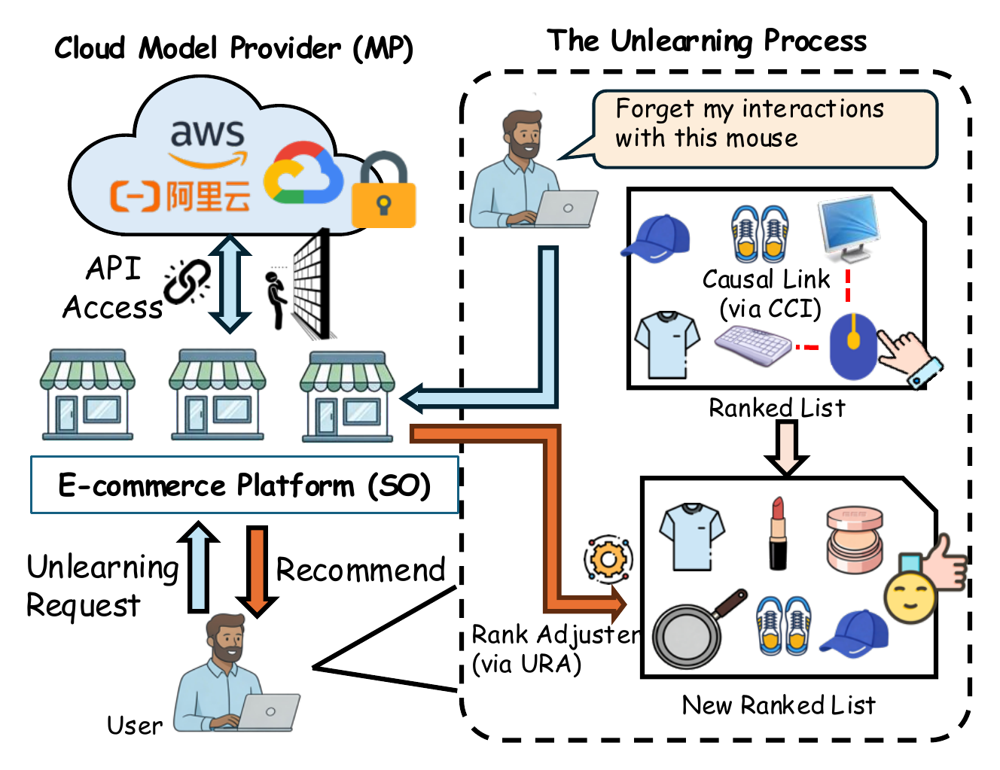
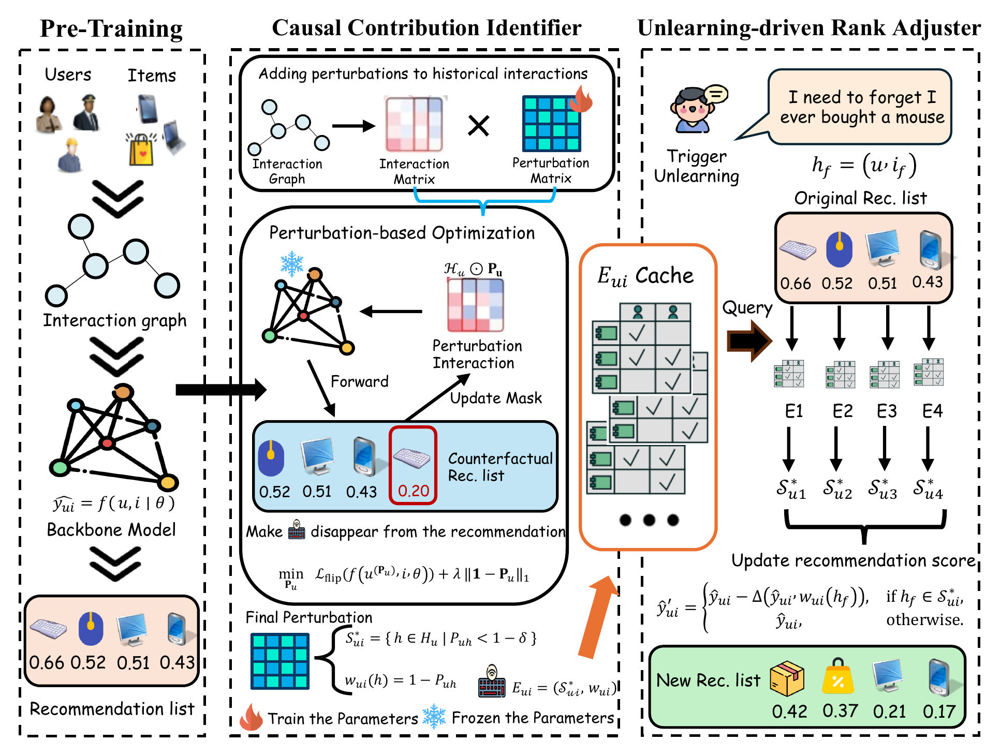
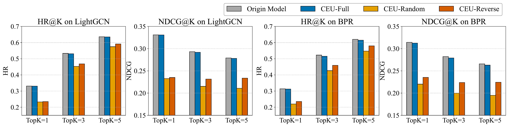
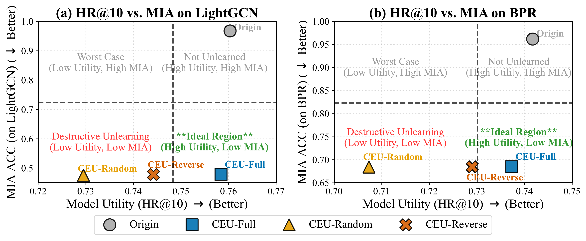
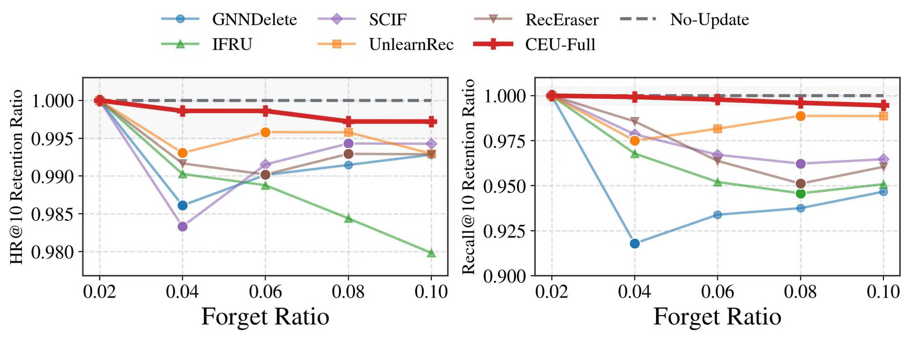

Presentation论文报告
A 13-minute presentation of the problem setting, CEU method, and experimental results.
用约 13 分钟介绍问题设定、CEU 方法和主要实验结果。
Abstract摘要
Recommendation unlearning aims to remove the influence of specific historical interactions that should no longer affect future recommendations, such as noisy clicks or outdated user preferences. The task becomes substantially harder in Machine-Learning-as-a-Service architectures, where a service operator accesses a remotely hosted recommender only through APIs and cannot modify its internal parameters.
We propose Causal Explanation-based Unlearning (CEU), an output-level framework for this asymmetric access setting. CEU first estimates how a forgotten interaction causally contributes to the current recommendation. Guided by this signal, it then removes the interaction's influence by adjusting the final ranking scores of affected items. Because CEU leaves model parameters untouched, it supports continuous unlearning requests without accumulating errors from repeated parameter updates. Experiments on three public datasets show effectiveness comparable to full retraining while preserving recommendation utility and substantially reducing computation.
推荐遗忘旨在移除不应继续影响未来推荐的历史交互，例如误点击或已经过时的用户偏好。在机器学习即服务架构中，这一任务更加困难：服务运营方只能通过 API 访问远程托管的推荐模型，无法修改模型内部参数。
我们提出基于因果解释的遗忘框架 CEU，面向这种非对称访问场景。CEU 首先估计待遗忘交互对当前推荐的因果贡献，再利用该信号调整受影响项目的最终排序得分，从而移除相应影响。由于 CEU 不改变模型参数，它能够持续处理遗忘请求，并避免重复参数更新带来的误差累积。三个公开数据集上的实验表明，CEU 的遗忘效果可与完全重训练相比，同时保持推荐效用并显著降低计算成本。
Key Contributions主要贡献
- Recommendation unlearning under asymmetric access. CEU is designed for MLaaS settings in which the service operator can query a recommender but cannot access model weights, gradients, or the training procedure.
- Causal Contribution Identifier. CCI identifies a minimal set of historical interactions that causally supports each recommendation and estimates the contribution of every supporting interaction.
- Unlearning-driven Rank Adjuster. URA uses the causal contributions to modify only the ranking scores affected by a forgetting request, while keeping all model parameters fixed.
- Empirical evaluation. Experiments on three datasets and two backbone recommenders examine recommendation utility, forgetting effectiveness, computational efficiency, and stability under larger forgetting ratios.
- 非对称访问条件下的推荐遗忘。 CEU 面向服务运营方只能查询推荐模型、无法访问模型权重、梯度或训练过程的 MLaaS 场景。
- 因果贡献识别器。 CCI 识别支撑每个推荐结果的最小历史交互集合，并估计每条支撑交互的贡献。
- 遗忘驱动的排序调整器。 URA 根据因果贡献，只修改受遗忘请求影响的排序得分，同时保持模型参数不变。
- 实验评估。 在三个数据集和两类推荐模型上，评估推荐效用、遗忘效果、计算效率以及较高遗忘比例下的稳定性。
Motivation研究动机
In Machine-Learning-as-a-Service, the model provider trains and hosts the recommender, while a service operator interacts with it through an API. The operator receives users' forgetting requests but cannot retrain, fine-tune, or inspect the model.
CEU works within this access boundary. The provider supplies causal explanations for recommendation results, and the operator uses them to remove the influence of a forgotten interaction through localized score adjustment.
在机器学习即服务架构中，模型提供方负责训练和托管推荐模型，服务运营方只能通过 API 与模型交互。运营方接收用户的遗忘请求，却无法重训练、微调或检查模型内部参数。
CEU 在这一访问边界内工作：模型提供方为推荐结果提供因果解释，服务运营方据此进行局部得分调整，移除待遗忘交互的影响。

Method方法
CEU follows an explain-then-forget procedure. A pretrained backbone first produces the original recommendation list. The Causal Contribution Identifier then determines which historical interactions are causally responsible for each recommendation. When a forgetting request arrives, the Unlearning-driven Rank Adjuster updates only the affected scores and returns a new ranking.
CEU 遵循“先解释、再遗忘”的流程。预训练推荐模型首先生成原始推荐列表；因果贡献识别器随后判断哪些历史交互对各推荐结果具有因果作用；当遗忘请求到达时，遗忘驱动的排序调整器只更新受影响的得分并返回新的排序。

1. Causal Contribution Identifier (CCI)因果贡献识别器（CCI）
CCI learns a sparse continuous mask over a user's historical interactions. Suppressing the interactions in the resulting support set reverses the recommendation decision. The learned mask values quantify how strongly each interaction supports the recommendation.
CCI 在用户历史交互上学习稀疏连续掩码。抑制最终支持集中的交互会改变推荐决策，掩码值则量化每条交互对推荐结果的支撑强度。
2. Unlearning-driven Rank Adjuster (URA)遗忘驱动的排序调整器（URA）
For a revoked interaction, URA queries the cached causal support sets, identifies dependent candidate items, and applies a contribution-weighted penalty only to their scores. Unrelated candidates and all model parameters remain unchanged.
对于被撤回的交互，URA 查询缓存的因果支持集，找出依赖该交互的候选项目，并只对这些项目施加由贡献权重控制的得分惩罚。无关候选项目和所有模型参数均保持不变。
Experiments实验
We evaluate CEU on MovieLens-100K, MovieLens-1M, and Netflix using BPR and LightGCN backbones. The comparison covers retraining-based, fine-tuning-based, and influence-based recommendation unlearning methods.
我们在 MovieLens-100K、MovieLens-1M 和 Netflix 数据集上，使用 BPR 与 LightGCN 作为基础推荐模型进行评估，并与基于重训练、微调和影响函数的推荐遗忘方法比较。
- Recommendation utility: on ML-1M with LightGCN, CEU obtains HR@10 = 0.7584, compared with 0.7680 for the original model.
- Forgetting effectiveness: on Netflix with LightGCN, membership-inference accuracy reaches 0.5000 at the 10% forgetting ratio, corresponding to random guessing.
- Efficiency: online unlearning takes 0.34-6.37 seconds across the six dataset/backbone settings, with about 22 KiB of cached causal information per user.
- 推荐效用：在 ML-1M 与 LightGCN 组合上，CEU 的 HR@10 为 0.7584，原始模型为 0.7680。
- 遗忘效果：在 Netflix 与 LightGCN 组合上，遗忘比例为 10% 时，成员推断准确率为 0.5000，达到随机猜测水平。
- 效率：六种数据集与基础模型组合上的在线遗忘时间为 0.34-6.37 秒，每位用户缓存的因果信息约为 22 KiB。
Recommendation utility and causal attribution推荐效用与因果归因
CEU-Full remains close to the original model for both backbones. Replacing causal contributions with random or reversed weights produces substantially lower HR and NDCG, showing that the attribution signal is necessary for preserving utility.
在两类基础模型上，CEU-Full 均接近原始模型。将因果贡献替换为随机权重或反向权重会明显降低 HR 和 NDCG，说明准确的归因信号是保持效用的必要条件。

Utility-forgetting trade-off效用与遗忘效果的权衡
The preferred operating region combines high ranking utility with low membership-inference accuracy. CEU-Full lies in this region for both LightGCN and BPR, while the non-causal variants reduce attack accuracy mainly by degrading recommendation quality.
理想工作区域同时要求较高的排序效用和较低的成员推断准确率。在 LightGCN 和 BPR 上，CEU-Full 均位于该区域，而非因果变体主要通过损害推荐质量来降低攻击准确率。

Stability under larger forgetting ratios较高遗忘比例下的稳定性
As the forgetting ratio increases from 2% to 10%, CEU stays close to the no-update reference on both HR@10 and Recall@10 retention. Methods that update model parameters show larger changes on the retained set.
当遗忘比例从 2% 增加到 10% 时，CEU 在 HR@10 和 Recall@10 保留率上均接近不更新模型的参考结果；需要更新模型参数的方法在保留集上产生了更明显的变化。

BibTeX
The entry below reflects the accepted ICDM 2026 paper. DOI and page numbers will be added when the proceedings are available.
以下信息对应 ICDM 2026 录用论文。正式论文集发布后将补充 DOI 与页码。
@inproceedings{zhang2026explain,
title = {Explain, Then Forget: Recommendation Unlearning under Asymmetric Access Constraint},
author = {Zhang, Haichao and Zhang, Chong and Wang, Wen and Qiu, Shi and Hu, Peiyu and Wang, Jia},
booktitle = {2026 IEEE International Conference on Data Mining (ICDM)},
year = {2026},
url = {https://zhanghaichao.loc.cc/CEU/}
}Acknowledgements
This study was funded by the National Natural Science Foundation of China (Grant No. 72401232), the Natural Science Foundation of the Jiangsu Higher Educational Institution of China (Grant No. 23KJB520037), the XJTLU Research Development Fund (RDF-21-01-053), and Liaoning Liaohe Lab (Grant Nos. LLL24ZZ-02-01 and LLL24ZZ-02-02).
致谢
本研究获得国家自然科学基金（72401232）、江苏省高等学校自然科学研究项目（23KJB520037）、西交利物浦大学研究发展基金（RDF-21-01-053）以及辽宁辽河实验室（LLL24ZZ-02-01、LLL24ZZ-02-02）的支持。